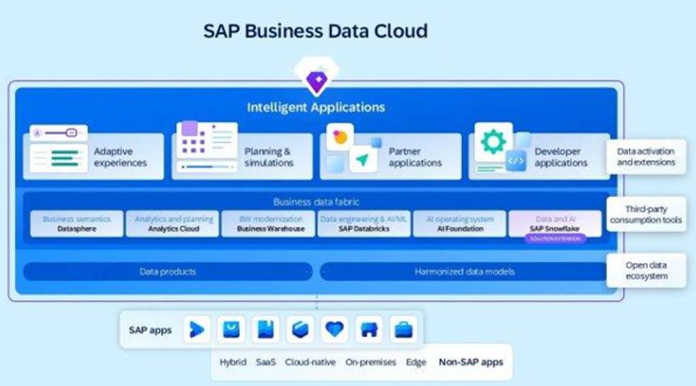
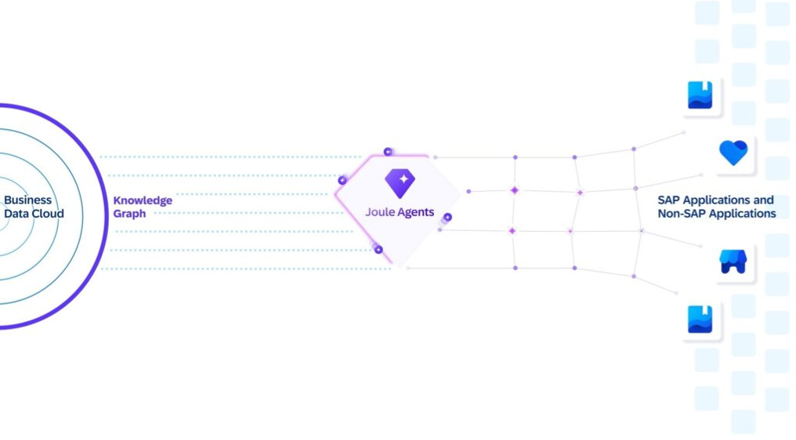
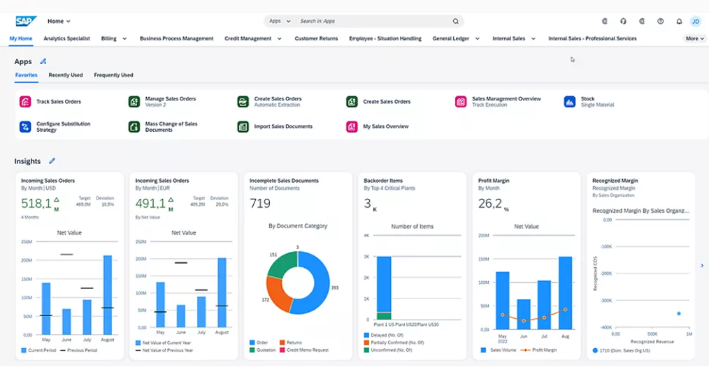
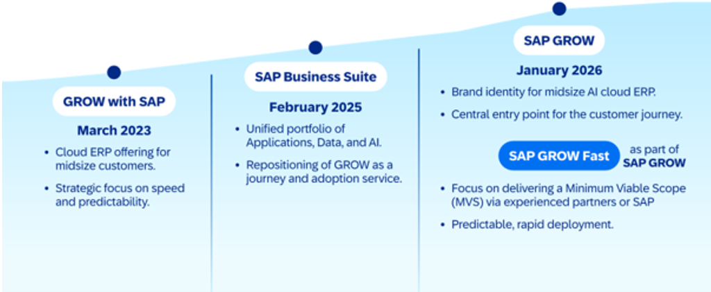
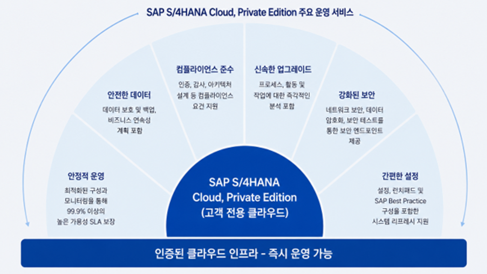
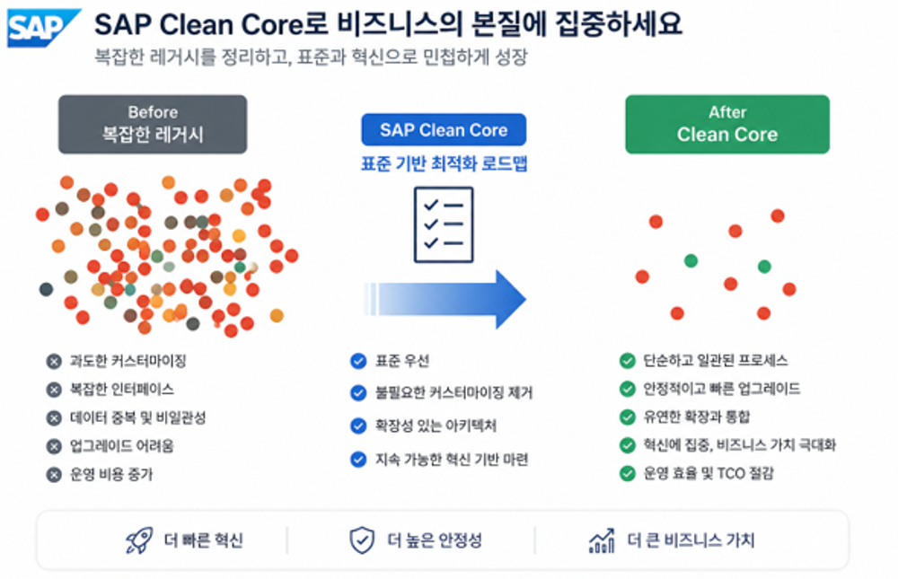

Business · SAP
비즈니스의 핵심 프로세스를 통합 관리하며, 지속 가능한 비즈니스 가치를 창출합니다.
Applications · Data · AI
애플리케이션, 데이터, AI가 선순환 구조를 이루며 기업의 디지털 전환을 가속화합니다.
기업 전반의 업무 프로세스를 하나의 통합된 시스템으로 연결합니다. 모든 업무 데이터가 단일 시스템에서 관리되므로 데이터 사일로를 제거하고 전사적인 가시성을 확보할 수 있습니다.
SAP Business Data Cloud는 SAP 데이터와 외부 시스템 데이터를 통합하여 신뢰할 수 있는 데이터 기반을 제공합니다.

SAP Business AI는 업무 프로세스에 기본적으로 내장되어 직원 생산성을 향상시키고 반복 업무를 줄이며 비즈니스 성과를 개선합니다.

Key Features
클라우드 기반의 안전한 운영 환경에서 실시간 데이터와 내장형 AI로 비즈니스 혁신에 집중할 수 있습니다.
기업이 직접 서버와 인프라를 구축·운영할 필요가 없습니다. SAP가 제공하는 안전한 클라우드 환경에서 시스템이 운영되며, 고객은 비즈니스 혁신에 집중할 수 있습니다.
SAP HANA 인메모리 데이터베이스를 기반으로 대용량 데이터를 실시간으로 처리합니다.
ERP 내에 AI와 머신러닝 기능이 통합되어 있습니다.
별도의 대규모 업그레이드 프로젝트 없이 최신 ERP 환경을 유지할 수 있습니다.
기업 성장에 따라 손쉽게 시스템을 확장할 수 있습니다. 글로벌 수준의 보안 및 규정 준수 체계를 기반으로 안정적인 운영 환경을 제공합니다.
Expected Effects
애플리케이션, 데이터, AI가 선순환 구조를 형성함으로써 디지털 전환을 가속화합니다.
통합 데이터와 실시간 분석으로 더 빠르고 정확한 의사결정을 지원합니다.
자동 업그레이드와 내장 AI로 운영을 최적화하고 혁신을 이어갑니다.
유연한 확장성으로 변화하는 시장에 빠르게 대응합니다.
SAP Cloud ERP · Public Edition
글로벌 Best Practice가 내장된 SaaS 기반 ERP로, 표준 프로세스를 기반으로 빠르게 디지털 전환을 추진합니다. SAP HANA 실시간 처리와 SAP Business AI를 활용하여 데이터 기반 의사결정을 지원합니다.

GROW with SAP
중견·성장 기업이 SAP Cloud ERP를 빠르고 예측 가능하게 도입할 수 있도록 표준 프로세스, 구축 방법론, 기술 지원을 통합 제공하는 SAP의 도입 프로그램입니다. 최근 SAP Business Suite 전략과 함께 AI 기반 디지털 혁신 여정을 지원하는 대표 브랜드로 발전하고 있습니다.

Key Features
검증된 표준 프로세스와 SaaS 아키텍처로 빠른 도입과 지속적인 혁신, 낮은 운영 비용을 함께 실현합니다.
SAP가 검증한 산업 표준 프로세스를 기반으로 구축됩니다. Fit-to-Standard 방식을 통해 불필요한 개발과 복잡성을 최소화하고, 수개월 내 안정적인 운영 환경을 구축할 수 있습니다.
연 2회 정기 릴리스를 통해 최신 기능, 보안 패치, 규제 대응 사항이 자동으로 적용됩니다. 별도의 업그레이드 프로젝트 없이 항상 최신 ERP 환경을 유지할 수 있습니다.
SAP Business AI와 AI 코파일럿 Joule이 기본 내장되어 반복 업무를 자동화하고 의사결정을 지원합니다.
필요한 업무 영역부터 단계적으로 도입하고 비즈니스 성장에 따라 손쉽게 확장할 수 있습니다.
인프라 구축·운영, 유지보수, 업그레이드 비용을 최소화합니다. 예측 가능한 구독 기반 비용 구조를 통해 IT 운영 효율성을 높입니다.
SAP Business Data Cloud를 통해 통합된 데이터를 기반으로 SAP Business AI가 업무 프로세스 전반에 내장되어 운영 효율성과 경쟁력을 확보합니다.
Core Business Processes
재무부터 공급망, 서비스까지 전사 핵심 프로세스를 표준 기반으로 통합 지원합니다.
재무회계, 관리회계, 자금관리, 결산 및 경영계획 기능을 통합 제공하여 재무 건전성과 경영 투명성을 확보합니다.
구매 계획부터 공급업체 선정, 구매 실행, 입고 및 지급까지 전 과정을 통합 관리합니다.
견적, 주문, 출하, 청구 및 수금까지 고객 중심의 영업 프로세스를 지원합니다.
수요 계획, MRP, 생산 실행, 품질 관리, 창고·물류 운영을 통합하여 공급망 가시성을 향상시킵니다.
설치, 유지보수, 현장 서비스 및 고객 지원 업무를 체계적으로 관리합니다.
Recommended For
SAP Cloud ERP · Private Edition
SAP Cloud ERP Private(라이선스명: SAP S/4HANA Cloud, Private Edition)는 고객 전용 환경에서 운영되는 차세대 클라우드 ERP입니다. 기업 고유의 프로세스와 높은 수준의 제어 권한을 그대로 유지하면서 클라우드로 전환할 수 있으며, 폭넓은 확장과 커스터마이징, 업그레이드 시점에 대한 유연한 통제가 가능해 대규모·복잡·규제 산업 환경에 적합합니다.

RISE with SAP
RISE with SAP는 기존 SAP ERP(ECC) 고객이 차세대 클라우드 ERP로 안전하게 전환할 수 있도록 방법론, 도구, 서비스를 통합 제공하는 전환 여정입니다.
TPS(Transformation Preparation Service)를 기반으로 ERP 환경 진단부터 Clean Core 전략 정의, 시스템 전환 및 안정화까지 전 과정을 지원하며, 기존 커스터마이징과 업무 환경을 고려한 전략으로 비즈니스 연속성을 확보합니다.
verifiedSAP Activate 기반 표준 전환 절차 — 각 단계에 품질 게이트(Quality Gate)가 적용되며, SAP 전문가와 파트너가 전 과정을 함께합니다.
Key Features
높은 제어 권한과 확장성을 유지하면서 글로벌 엔터프라이즈 운영과 산업 특화 프로세스를 함께 지원합니다.
기업 고유의 업무 요구사항을 핵심 ERP에 직접 개발하는 대신, SAP BTP 기반의 확장(Extension)으로 분리하여 구현합니다. Clean Core 지향의 확장 방식으로 핵심 ERP는 표준 상태로 유지하여 업그레이드 영향과 기술 부채를 최소화합니다.
재무, 구매, 생산, 영업, 물류, 서비스 등 핵심 업무를 통합 관리하며 다국어, 다통화, 다국가 세무 및 법규를 지원합니다. 전 세계 사업장을 하나의 플랫폼에서 운영하여 글로벌 표준 프로세스와 거버넌스를 구현합니다.
제조, 유통, 화학, 에너지, 소비재, 금융 등 다양한 산업에 특화된 SAP Best Practice와 산업별 기능을 활용하여 복잡한 비즈니스 요구사항을 효과적으로 지원합니다.
기존 ERP 운영 방식을 유지하면서도 신규 클라우드 서비스를 단계적으로 도입할 수 있습니다. 운영 안정성을 유지하는 동시에 새로운 기능과 서비스를 빠르게 수용할 수 있습니다.
Clean Core
SAP Cloud ERP 핵심 시스템을 표준 프로세스 중심으로 유지하고, 과도한 커스터마이징을 최소화해 업그레이드와 혁신을 용이하게 만드는 전략입니다. 기업 고유 기능은 SAP BTP 확장(Extension)으로 분리하여 핵심 ERP는 항상 표준 상태를 유지합니다.

Recommended For